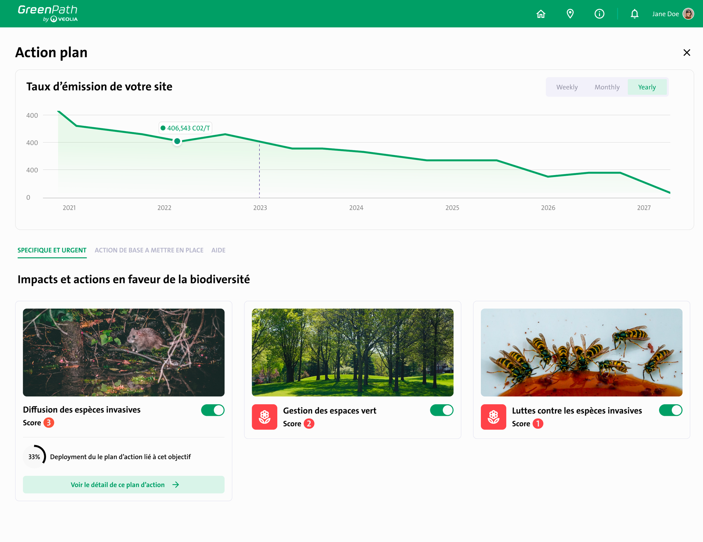
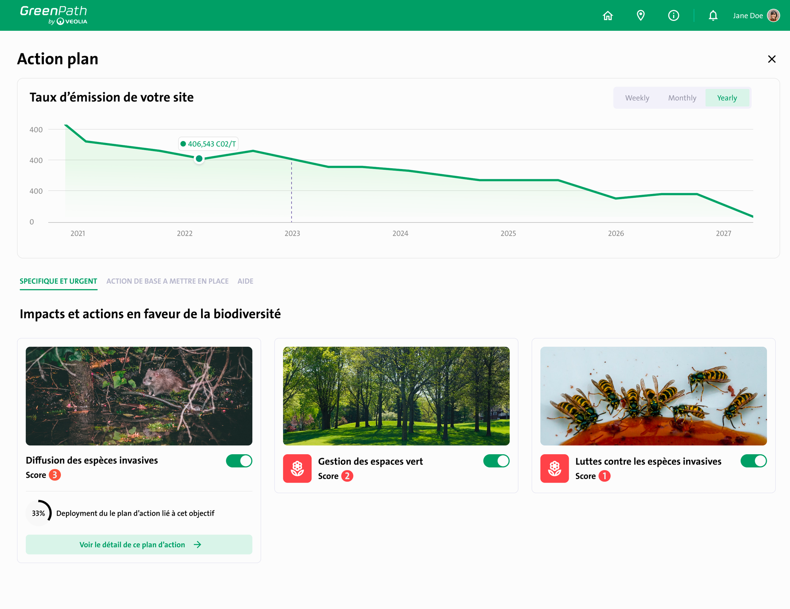
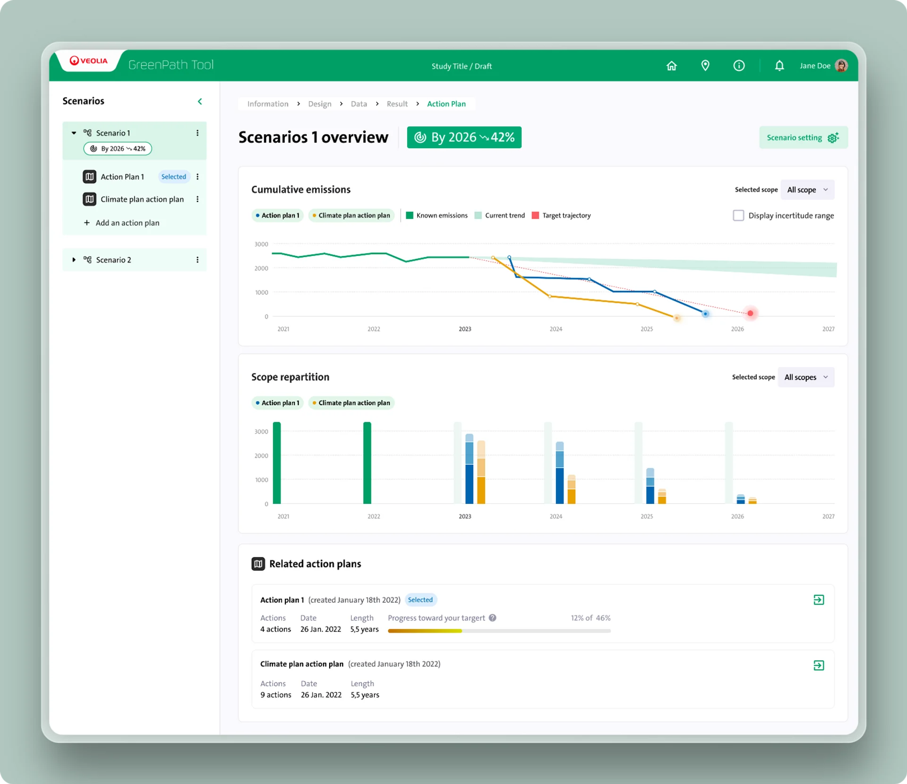
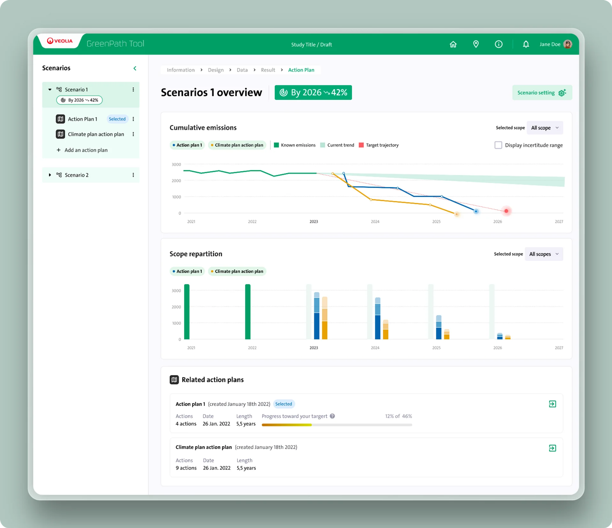

Dans le cadre de mon année d'alternance en UX designer, j'ai travaillé avec Veolia.
L'un des objectifs de ce projet était d'intégrer une nouvelle fonctionnalité
dans un produit existant : Greenpath. Greenpath est une plate forme interne, utilisée par
différentes
unités commerciales de Veolia pour calculer les émissions de CO2.
Celle-ci est destinée à être vendue en B2B dans les années à venir.
La nouvelle fonctionnalité permettrait à Veolia d'offrir des solutions sur mesure aux clients en fonction de leur quantité de CO2 afin de réduire les émissions. Ils voulaient également être en mesure de planifier la mise en œuvre de ces solutions au fil du temps et de suivre leurs progrès de manière simple.
Actuellement, cette solution existe déjà sous la forme d'un fichier Google sheet complexe, difficile à utiliser et à maintenir. Toutefois, malgré ses limitations fonctionnelles, le fichier est toujours utilisé par les unités administratives. Le défi consistait à proposer un produit qui s'intègre de manière transparente à l'identité graphique existante de GreenPath et à en faire une fonctionnalité de ce dernier.


 



 
